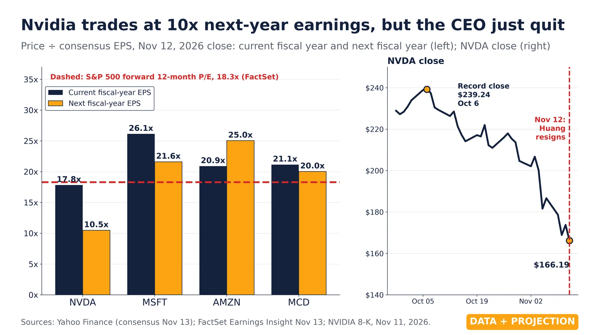

Q9. Nvidia Valuation

Nov 11, 2026 close: NVDA 22.0x trailing GAAP EPS, lowest since Mar 2019; peak 253x. Yahoo, SEC EDGAR.
- Nov 9, 2026 (Data): NVDA closed at 22.6x trailing four-quarter GAAP diluted EPS, exactly Rand’s figure. It was 21.4x on Nov 10 and 22.0x on Nov 11 ($173.73; trailing EPS $7.91).
- Since 2019 (Data): the last time the multiple was this low was Mar 7, 2019 (22.5x). Rand says May 2019, a gap probably due to dating EPS at quarter-end rather than at the filing date, which TVV uses.
- Jul 18, 2023 (Data): the peak was 252.6x, so Rand’s “most people loved it at 200x” is right in scale.
- 2018–19 (Data): the last time the multiple was this low, trailing EPS then fell 48% in a year (Oct 2018 to Oct 2019, crypto glut). A low trailing P/E can come just before earnings fall.
- Nov 17, 2026: NVIDIA reports Q3 FY2027 results. The trailing EPS will reset then, and the multiple will move even if the price does not.
- Correction to the brief: Rand’s chart is trailing GAAP, not forward. Forward consensus history is not public, so no forward P/E is shown (omitted). Pairs with M48 (neo-cloud drawdowns).
Note: “Cheapest since 2019” uses trailing earnings during a steep profit ramp, so the multiple falls fast by construction. The 2019 low came just before a 48% earnings drop. Whether 22x is cheap depends on forward earnings holding up, which this chart cannot show. Rand’s dates also differ slightly from TVV’s (May 2019 vs Mar 2019).
Note: Rebuttal: https://investor.nvidia.com/news/press-release-details/2026/NVIDIA-Sets-Conference-Call-for-Third-Quarter-Financial-Results/default.aspx
Sources: Yahoo Finance NVDA history SEC EDGAR XBRL company facts, NVIDIA (CIK 0001045810) SEC EDGAR: NVIDIA 10-Q filings NVIDIA investor relations: financial reports NVIDIA: conference call for third-quarter financial results Original post: Rand Group, Nov 2026

Nov 12, 2026 close: NVDA 10.5x next-FY EPS, 17.8x current-FY; S&P 500 18.3x forward. Yahoo, FactSet.
- Nov 11–12, 2026 (Data): NVIDIA’s 8-K says Jensen Huang resigned as president, CEO and director effective Nov 11. CFO Colette Kress is interim CEO and keeps the CFO role. The “BREAKING” post is real.
- Oct 6 to Nov 12 (Data): NVDA’s record close was $239.24 on Oct 6. It closed $173.73 on Nov 11, opened $151.01 on Nov 12 (low $148.80) and closed $166.19, 30.5% below the record.
- Nov 12 (Data): Rand’s 9.6x is $152 (an intraday price, not a close) over next-fiscal-year consensus EPS of $15.85. At the $166.19 close it is 10.5x.
- Nov 12 (Data): on current-fiscal-year EPS ($9.32) NVDA is 17.8x, about level with the S&P 500. The “cheaper than the market” claim holds only on next-year EPS.
- Nov 12–13 (Data): FactSet’s S&P 500 forward 12-month P/E was 17.7x on Nov 5 (Rand’s number) and 18.3x in the Nov 13 report. FactSet blends the next 12 months, not a fiscal year.
- Peers (Data): on Yahoo consensus at the Nov 12 close, next-FY P/E is MSFT 21.6x, AMZN 25.0x, MCD 20.0x. Rand’s peer figures appear to mix bases (MSFT near trailing, AMZN and MCD near next-FY) and do not reconcile on one basis.
- M52 link (Data): trailing GAAP P/E was 22.0x on Nov 11 and is 21.0x at the Nov 12 close ($7.91 trailing EPS). Forward and trailing multiples are different measures.
- Nov 17, 2026 (Projection): NVIDIA reports Q3 FY2027 results at 5 p.m. ET, the first under an interim CEO. The Kalshi 40% odds for Kress are not verified and are not plotted.
Note: “Cheaper than the S&P 500” rests on FY2028 consensus EPS, 15 months out and up 70% on this year’s, set before the CEO change. On this year’s EPS Nvidia is level with the market. Forward consensus history is not public, so no time series is shown.
Note: Rebuttal: https://investor.nvidia.com/news/press-release-details/2026/NVIDIA-Sets-Conference-Call-for-Third-Quarter-Financial-Results/default.aspx
Sources: NVIDIA News: CEO transition SEC EDGAR: NVIDIA 8-K dated Nov 11, 2026 TechCrunch: NVIDIA’s Jensen Huang resigns; CFO Colette Kress named interim CEO NVIDIA: conference call for third-quarter financial results FactSet Insight: lowest forward 12-month P/E ratio for the S&P 500 in more than 3 years FactSet Earnings Insight, Nov 13, 2026 (PDF) Yahoo Finance NVDA analysis (consensus EPS) Yahoo Finance NVDA history Original post: Rand Group, Nov 2026